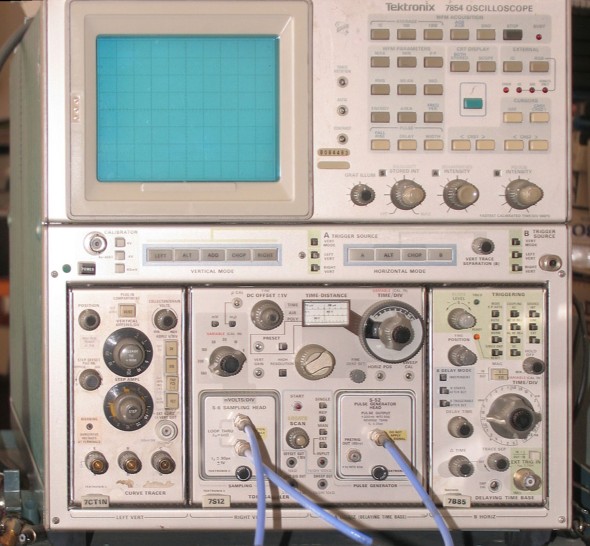
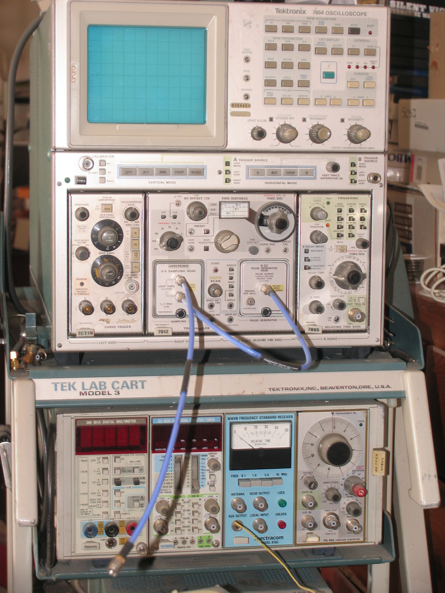

Tektronix 7854
The oscilloscope with a detachable RPN calculator keyboard — a lab instrument taught to compute

Overview
The Tektronix 7854, introduced in 1980, was a 400 MHz combined analog/digital oscilloscope mainframe with a defining feature: a detachable Waveform Calculator Keyboard using Reverse Polish Notation that allowed operators to write waveform-processing programs directly on the instrument. Internally codenamed the "Smart Scope," it used a Texas Instruments TMS9900 16-bit microprocessor — the same CPU as the TI-99/4 home computer — with 32KB ROM, 8KB RAM, a 10-bit digitizer sampling at 500 kHz, and storage for up to 1,024 waveform points. The keyboard's operators (add, multiply, square root, log, FFT, integration) worked on entire waveforms as operands. The 7854 was not a computer with a scope card added; it was a scope that had been taught to compute. Priced at $10,500 in 1981 ($38,600 in 2026), it was produced for a decade (1980-1990) and became a mainstay of research laboratories worldwide.
Deep dive
The 7854's interface was schizophrenic by design. In analog mode, the operator used it like any other 7000-series scope: turn vertical sensitivity knobs, adjust the timebase, position the trace with horizontal and vertical offset controls. The CRT displayed conventional real-time waveforms. But entering digital mode transformed the instrument: the CRT showed stored waveforms, alphanumeric readouts, and programmable text. The detachable keyboard — connected by cable — became the primary input device. Typing "WAVEFORM A WAVEFORM B +" added two captured signals point-by-point. The keyboard used postfix notation because Tektronix engineers found it mapped naturally onto signal processing workflow: acquire waveform, acquire another waveform, apply transformation. The Keyboard as Instrument Redefinition. The Waveform Calculator Keyboard was not an afterthought — a dedicated 1981 Application Note (AX-4864) was devoted entirely to the keyboard guide. It contained keys for waveform storage/recall, arithmetic operators, signal processing functions (average, integrate, differentiate, FFT), cursor measurement control, and macro programming. Option 2D expanded memory to 40 waveforms and 2,000 keystrokes of user programming. The keyboard was explicitly designed to be detachable so the instrument could revert to being a conventional scope when mathematical work was unnecessary. A companion WP1310 Waveform Processing System combined the 7854 with a Tektronix 4052 desktop computer for even more sophisticated analysis — but the keyboard made the scope self-contained. HCI Significance. The 7854 matters for HCI history because it forced two entirely different interaction paradigms to coexist in one physical instrument. The analog interaction was continuous, spatial, and embodied — hands on knobs, eyes on a glowing trace. The digital interaction was discrete, symbolic, and abstract — fingers on keys, mind on mathematical transforms. The operator had to negotiate the boundary between these modes, and the 7854's design made that boundary explicit rather than hiding it behind software abstraction. In an era when most instruments were either analog OR digital, the 7854 insisted on being both.
Team & pioneers
- Tom Rousseau. Project Manager, Tektronix 7854.
- Val Garuts. Instrument concept.
- Jim Tallman. System architecture, testability, and training.
- Les Larson. Digitizer design.
- Clark Foley. Applications specialist; authored Tekniques magazine articles on the 7854.
- Burt Johnson / Jim Schlegel / Ellen Deleganes. Firmware development.
- Hiro Moriyasu / Jack Gilmore / Wim Velsink / Luis Navarro. Patent US 4225940A (1978) — oscilloscope system for acquiring, processing, and displaying information; foundational to 7854.
Media

Sources
- TekWiki — 7854 comprehensive reference (specifications, full design team, manuals, internal photos)
- Tektronix Tekniques Vol.4 No.8 (Dec 1980) — 7854 introduction and programming article by Clark Foley
- Tekscope 1980 V12 N3 — "Digital Waveform Processing in a High-Performance 7000-Series Oscilloscope" by Tom Rousseau and Bill Cox
- 7854 Operators Manual (PDF)
- Patent US 4225940A (1978) — Oscilloscope system for acquiring, processing, and displaying information
- CuriousMarc — Tek 7854 page with restoration videos
- Wikimedia Commons image — User:Glrx, CC BY-SA 4.0